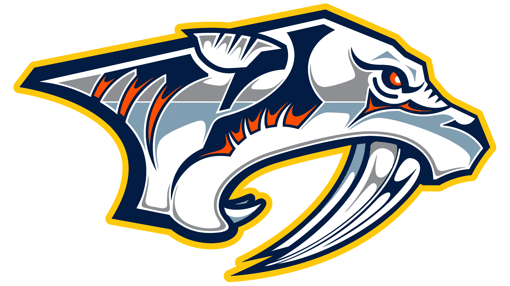

My Favorite Team: Nashville Predators
My favorite NHL team is the Nashville Predators. I grew up going to most of the games when I was a kid and still to this day attend them when I can. The atmosphere of the games is like nothing else. I tell people even if you aren't into hockey a Preds game will always be a good time.
The 2017 Stanley Cup Run
In 2017, the Nashville Predators went on an unforgettable Cinderella run to the Stanley Cup Final. As the lowest seed in the Western Conference, the Preds shocked the hockey world by sweeping the Chicago Blackhawks in the first round, a moment I was able to be a part of every game for and one of my most memorable times for hockey.
They kept rolling by defeating the St. Louis Blues and the Anaheim Ducks, earning their first-ever trip to the Stanley Cup Final. Smashville was at full volume: catfish on the ice, gold everywhere, and a home crowd that never stopped cheering.
Even though Nashville eventually lost to the Pittsburgh Penguins, that playoff run helped turn the Predators into one of the most respected and fun teams in the NHL, and it created memories Preds fans, especially me, will never forget. I hope we can egt back there one day and win it all.